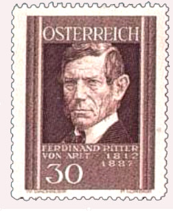

|  |
Carl Ferdinand Ritter von Arlt was the son of a poor mining smith. He had a rough childhood and study time, attending the gymnasium in Leitmeritz and the University of Prague. He was trained in ophthalmology by professor Johann Nepomuk Fischer (1777-1847), the founder of modern eye medicine in Bohemia, and was conferred doctor of medicine in Prague in 1839. From October 1846 to July 1849 he worked as a supplementary at the chair of ophthalmology in Prague, and from August 1849 to July 1856 was professor of ophthalmology in Prague.
Upon the death of Anton Edler von Rosas (1791-1855) he was called to take over his chair in Vienna, holding this tenure from the autumn of 1856 to the end of July 1883, when he retired at the age of 70. However, although regulations forced him to leave office, Arlt continued his scientific and practical work. No less was expected from a man whose iron will and great intellect had brought him up from poverty to the peaks of academic prestige.
Arlt's great achievement lies not only in his own research and his skill as an eye surgeon, but as much in his influence on the development of ophthalmology. His brilliant lectures attracted large number of students, one of them the 17 year younger Albrecht von Graefe, who looked him up in Prague. Arlt was instrumental in influencing von Graefe to concentrate exclusively on this branch of medicine.
Despite his high office he lived in a simple, undemanding way, always opening his hand to people in want, and a fatherly friend to poor students. He maintained a lifelong attachment to his home in the Bohemian Erzgebirge, and every year visited his birthplace in order to assist the numerous people in the vicinity suffering from diseases of the eyes.
Arlt was a prolific writer. Besides his numerous books and articles, he wrote a brochure on the eye care in which he urged eye physicians to establish the strength of eyeglasses themselves, not to leave it to the optician. In his work on the diseases of the eye he presented the proof that short-sightedness is normally a consequence of an elongation of the sagittal diameter of the bulbus of the eye.
He died of Gangraene senilis on March 7, 1887. His son, born December 28, 1842 in Prague, also named Ferdinand Ritter von Arlt, followed his father into the discipline of ophthalmology. He worked at the University clinic and for years was the private assistant of his father. He practiced ophthalmology in Vienna and died there on February 23, 1917.
It was still early in his career when Arlt began publishing his large work on diseases of the eye, and in 1855, with Franz Cornelis Donders (1818-1889), became a co-editor of the journal Archiv für Ophthalmologie, which had been founded by Albrecht von Graefe.
Arlt described an operation for transplantation of the ciliary bulbs in the treatment of distichiasis.
Bibliography:
Pflege der Augen im gesunden und Kranken Zustande, neben einem Anhange über Augengläser.
Prague 1846; revised editon, Prague, 1868.
Die Krankheiten des Auges.
3 volumes, Prag, F. A. Credner & Kleinbub, 1851, 1853 and 1856.
Retinitis nyctalopica, From ”Der Bericht ueber die Augenklinik.”
Translated, with consent of the author, by J. F. Weightmann, M. D., of Philadelphia.
23 pages. Philadelphia, Lindsay & Blakiston, 1868.
Treatment of lachrymaal affections. Translated, with consent of the author, by J. F. Weightmann, M. D.
Philadelphia, Lindsay & Blakiston, 1868.
Operationslehre.
In Edwin Theodor Saemisch and Albrecht von Graefe: Handbuch der gesamten Augenheilkunde. Volume 3. Leipzig 1874.
Die Verletzungen des Auges. Vienna, 1875.
Die Kurzsichtigkeit, Enstehung und Ursachen. Vienna 1878.
Klinische Darstellung der Krankheiten des Auges zunächst der Binde-, Horn- und Liderhaut, dann der Iris und des Ciliakörpers. Wien, Braumüller, 1881.
Zur Lehre vom Glaucom. Vienna, 1884.
Meine Erlebnisse. Autobiography, Wiesbaden 1887.
Otto Becker, pupil of Arlt, completed his autobiography: Letzte Lebensjahre, Krankheit und Tod. Bibliography; list of honours.A selection of his journal papers:
Aphoristische Bemerkungen über einige Augenkrankheiten.
Vierteljahresschrift für die praktische Heilkunde, Prag, 1844.
Physiologisch- und pathologisch-anatomische Bemerkungen über die Bindehaut des Auges.
Vierteljahresschrift für die praktische Heilkunde, Prag, volume 12: 70-79.
Ueber Trichiasis und Entropium.
Vierteljahresschrift für die praktische Heilkunde, Prag, 1845.
Zur pathologische Anatomie des Auges.
Vierteljahresschrift für die praktische Heilkunde, Prag, volume 14: 44-61.
Ueber das Trachom.
Vierteljahresschrift für die praktische Heilkunde, Prag, 1848, 18: 41-68.
Zur pathologische Anatomie des Auges.
Vierteljahresschrift für die praktische Heilkunde, Prag, 1847.
Ueber Trachoma.
Vierteljahresschrift für die praktische Heilkunde, Prag, 1848.
Zur Nosographie und Nosogenie des Flügelfelles.
Vierteljahresschrift für die praktische Heilkunde, Prag, 1848, 18, 73-92.Ueber den Thränenschlauch.
Archiv für Ophthalmologie, Berlin, 1855, I.
Form und Lage des Corpus ciliare und der Iris.
Archiv für Ophthalmologie, Berlin, 1857, III.
Der Ringmuskel der Augenlieder.
Archiv für Ophthalmologie, Berlin, 1863, IX.
Zur Behandlung der Thränenschlauchleiter.
Archiv für Ophthalmologie, Berlin, 1868, XIV.
Zur Lehre von Hornhautabscesse.
Archiv für Ophthalmologie, Berlin, 1870 XVI.
Winke zur Staaroperation.
Archiv für Ophthalmologie, Berlin, 1885, XXI.